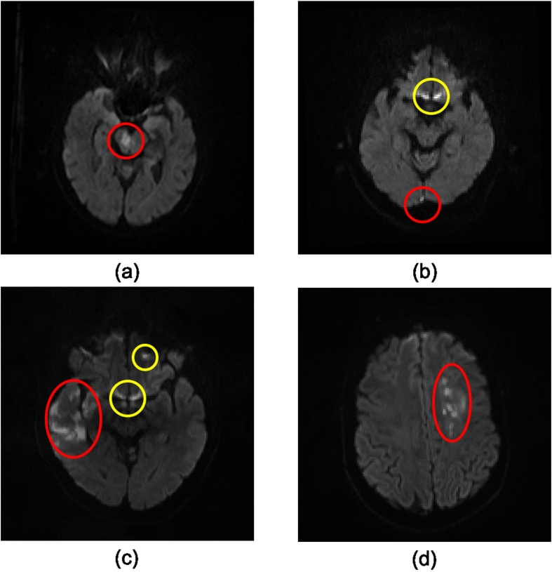
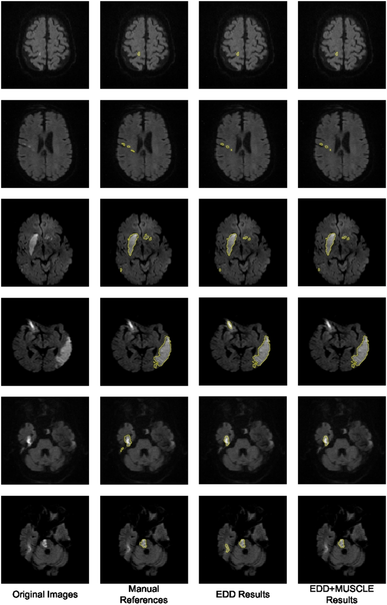

This page renders local downloaded assets that are allowed to be viewed from the project workspace. Link-only evidence remains in each disease's figure and source metadata.
Total downloaded asset files: 2
cerebral-infarction
assets/cerebral-infarction/pmc5480013-acute-dwi-lesions.jpg
assets/cerebral-infarction/pmc5480013-dwi-segmentation-results.jpgThese completed diseases have figure evidence, but no downloaded local assets yet. Download only after reuse rights are reviewed and explicitly allow local storage or embedding.
| Disease | Figure Records | Link-Only Figures | Explicit Reusable Candidates | Recommended Action |
|---|---|---|---|---|
Lacunar infarctlacunar-infarct | 25 | 25 | 0 | review figure reuse rights and download only sources with explicit reusable licenses |
Watershed infarctwatershed-infarct | 25 | 25 | 0 | review figure reuse rights and download only sources with explicit reusable licenses |
Cerebral hemorrhagecerebral-hemorrhage | 25 | 25 | 0 | review figure reuse rights and download only sources with explicit reusable licenses |
Silent micro-hemorrhage of brainsilent-micro-hemorrhage-of-brain | 25 | 25 | 0 | review figure reuse rights and download only sources with explicit reusable licenses |
Cavernous hemangiomacavernous-hemangioma | 25 | 25 | 0 | review figure reuse rights and download only sources with explicit reusable licenses |
Subdural intracranial hemorrhagesubdural-intracranial-hemorrhage | 25 | 25 | 0 | review figure reuse rights and download only sources with explicit reusable licenses |
Intracranial aneurysmintracranial-aneurysm | 25 | 25 | 0 | review figure reuse rights and download only sources with explicit reusable licenses |
Metastatic malignant neoplasm to brainmetastatic-malignant-neoplasm-to-brain | 25 | 25 | 0 | review figure reuse rights and download only sources with explicit reusable licenses |
Intracranial meningiomaintracranial-meningioma | 25 | 25 | 0 | review figure reuse rights and download only sources with explicit reusable licenses |
Gliomaglioma | 25 | 25 | 0 | review figure reuse rights and download only sources with explicit reusable licenses |
Schwannomaschwannoma | 25 | 25 | 0 | review figure reuse rights and download only sources with explicit reusable licenses |
Pituitary adenomapituitary-adenoma | 25 | 25 | 0 | review figure reuse rights and download only sources with explicit reusable licenses |
{kind=link}
{kind=link}